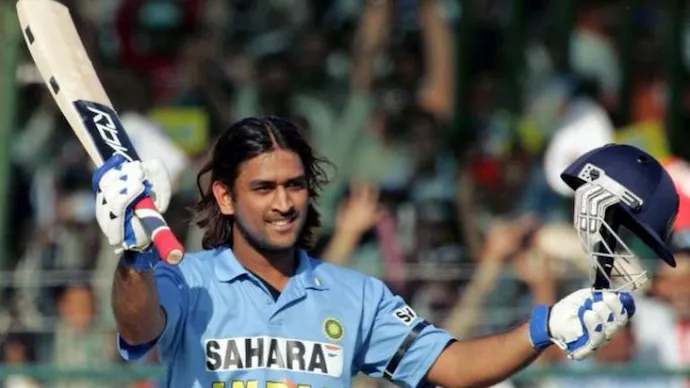
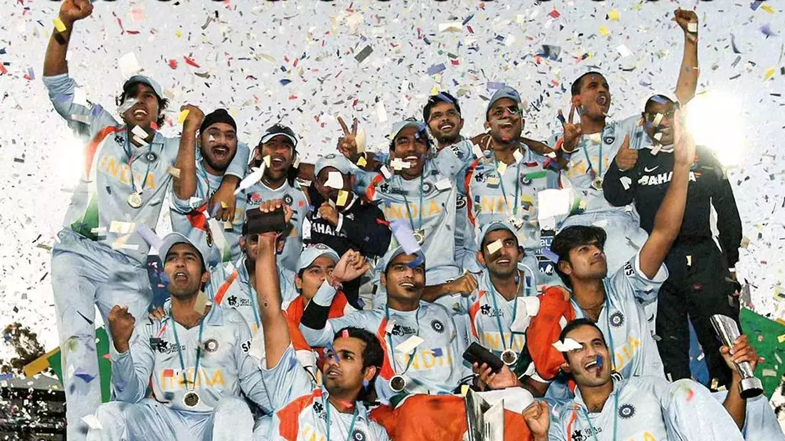
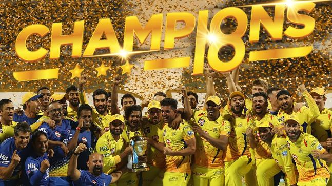

Experience the Glimpse of India's Most Succesful Cricket Captain - MS Dhoni.
About
Hailing from Jharkhand, Mahendra Singh Dhoni's rise through the ranks into international cricket is a tale
of rebellion, extraordinary merit, perseverance, and, most of all, belief. After being scouted on the whims
of his school P.E. teacher as a wicketkeeper, Dhoni created whispers in the cricketing circles of Ranchi - a
teenage boy with no measurable upper-body strength clearing boundaries against some of the best fast bowlers
of the district. However, the system failed him as he found it difficult to make the cut against candidates
of the more affluent A-tier states. Consequently, in a desperate move, he joined the Railways Ranji team and
started to work as a ticket collector at the Kharagpur railway station to make ends meet.
Dhoni was born on 7 July 1981 in Ranchi, Bihar (now in Jharkhand) in a Hindu Rajput family to Pan Singh and
Devaki Devi. His parents hailed from Lwali village in Uttar Pradesh (now Uttarakhand) and he was the
youngest of three children. His family spells the surname as "Dhauni". The spelling "Dhoni"
emerged due to a spelling mistake in his school certificates and, despite repeated attempts by his family,
has never been rectified.
Dhoni did his schooling at DAV Jawahar Vidya Mandir where he started playing football as a goal keeper but
later moved to play cricket on the suggestion of his coach Keshav Banerjee. From 2001 to 2003, Dhoni
worked as a Travelling Ticket Examiner (TTE) at Kharagpur under South Eastern Railway zone of Indian
Railways.
He played as a wicket-keeper for Commando cricket club from 1995 to 1998 and Central Coal Fields Limited
(CCL) team in 1998. At CCL, he batted higher up the order and helped the team qualify to the higher
division. Based on his performance at club cricket, he was picked for the 1997/98 season of Vinoo Mankad
Trophy under-16 championship. In the 1998-99, Dhoni played for Bihar U-19 team in the Cooch Behar
Trophy and scored 176 runs in 5 matches. In the 1999-2000 Cooch Behar Trophy, the Bihar U-19 cricket team
made it to the finals, where Dhoni made 84 in a losing cause. Dhoni's contribution in the tournament
included 488 runs in nine matches with five fifties, 17 catches and seven stumpings. Dhoni made it to
the East Zone U-19 squad for the C. K. Nayudu Trophy in the 1999-2000 season and scored only 97 runs in four
matches, as East Zone lost all the matches and finished last in the tournament.
After completing his schooling in Ranchi, MS Dhoni moved to Kharagpur to pursue his higher studies. It was
during this time that he applied for a job as a ticket collector with the Indian Railways. Although he was
selected for the job, he had to undergo rigorous training before he could start working.
As a ticket collector, he was responsible for checking passengers' tickets and ensuring that they had
paid the correct fare. He had to work long hours and deal with irate passengers, but he took it all in his
stride. Despite the challenges, he never lost his calm demeanor, and his pleasant personality won him many
admirers.
During his free time, he would often be seen playing cricket with his friends. He had a natural talent
for the game, and it wasn't long before he was noticed by the local cricket coach. The coach recognized his
potential and urged him to pursue cricket seriously.
Test Cricket
MS Dhoni, who is among India's most renowned cricketers, had a remarkable Test match career. In December
2005, he made his Test debut against Sri Lanka. He played for India for 90 Tests until he retired from the
format in December 2014. Dhoni scored 4,876 runs as a wicketkeeper-batsman, with an average of 38.09,
including 6 centuries and 33 half-centuries. In 2013, he scored the highest score of 224 against
Australia.Dhoni was famous for his sharp cricketing mind and calm demeanor। He was one of India's best Test
captains, having led the country in 60 Test matches, winning 27, losing 18, and drawing 15. Under his
leadership,
India reached the first place in the ICC Test rankings in 2009. Dhoni's leadership was marked by his
strategic acumen and ability to get the best out of his players,
particularly in challenging conditions. Dhoni's legacy in Test format as a Captain was absolutely brilliant.
Mahendra Singh Dhoni made his Test debut for India on December 2, 2005, against Sri Lanka in Chennai. Known
primarily for his explosive batting in limited-overs formats at that time, there was curiosity about how he
would adapt to the longer format of the game. In his debut Test, Dhoni didn't have a remarkable start with
the bat, scoring 30 runs in the only innings
India played. He batted lower down the order, which became typical of his role early on in Test cricket. His
wicketkeeping, however, drew attention, as he showcased his agility behind the stumps, further strengthening
his case as India's first-choice keeper-batsman. Although his debut wasn't extraordinary, Dhoni would go on
to become a vital player for India in Tests,
eventually becoming the team's captain in 2008. Under his leadership, India reached the No. 1 spot in the
ICC Test rankings for the first time in their history. He retired from Test cricket in December 2014 after
playing 90 matches, where he scored 4,876 runs, including 6 centuries. Dhoni's legacy in Test cricket is
defined by his calm leadership and astute strategies, especially in pressure situations.
MS Dhoni's highest score in Test cricket came against Australia at Chennai in February 2013, during the
first Test of the Border-Gavaskar Trophy.
224 vs Australia, Chennai (2013)
In this match Dhoni scored 224 crucial runs and make his highest score in the format as winning edge.
His knock included 24 boundaries and 6 sixes, showing a mix of power and precision.
Dhoni's partnership with Virat Kohli (who scored 107) helped India recover and eventually take control of
the match.
India won the match comfortably by 8 wickets, and Dhoni was named the Player of the Match for his incredible
performance.
This knock was a testament to Dhoni's ability to dominate even in the longer format, and it remains his only
double-century in Test cricket. His 224 was crucial in setting the tone for India's 4-0 series victory over
Australia in that series.
Dhoni played his last series during India's tour of Australia in December 2014. Following the third Test in
Melbourne, Dhoni announced his retirement from the format. In his last test, he effected nine dismissals
(eight catches and a stumping), and in the process, went past Kumar Sangakkara's record for most stumpings
in international cricket and also set a record for effecting the most dismissals in a match by an Indian
wicketkeeper until it was broken by Wriddhiman Saha in 2018. In the Carlton Mid triangular series in
Australia, India failed to win a single match with Dhoni himself managing just 70 runs from three innings at
an average of 23.34. After the Succesful 9 years of team player and Captain, Dhoni goodbye to test cricket
with watery eyes.
ODIs
Mahendra Singh Dhoni, often referred to as MS Dhoni, had an illustrious ODI career for India from 2004 to
2019. Known for his calm demeanor, tactical acumen, and finishing abilities, Dhoni was instrumental in many
of India's triumphs. He played 350 ODIs, scoring 10,773 runs at an average of 50.57, including 10 centuries
and 73 fifties. Dhoni captained India to victory in the 2007 ICC T20 World Cup, 2011 ICC Cricket World Cup,
and 2013 ICC Champions Trophy. Renowned for his finishing skills, Dhoni remained not out 84 times in ODIs, a
testament to his ability to close out matches. In addition to his batting and captaincy, Dhoni's
wicketkeeping was world-class. He holds the record for the most stumpings in ODIs (123), showcasing his
quick reflexes behind the stumps. Dhoni retired from international cricket in 2020, but his
contributions to Indian cricket, especially in the ODI format, remain legendary. His impact on the game,
both as a player and a leader, continues to inspire generations.
MS Dhoni made his One Day International (ODI) debut for India on December 23, 2004, in a match against
Bangladesh in Chittagong. Coming in as a wicketkeeper-batsman, his debut innings was far from spectacular—he
was run out for a duck (0) after facing just one ball. Despite the disappointing start, Dhoni's aggressive
batting style and sharp wicketkeeping skills soon caught the attention of cricket fans and selectors alike.
It wasn't long after his debut that Dhoni found his rhythm, particularly with his explosive knock of 148
against Pakistan in 2005, just his fifth ODI. This innings marked the beginning of a stellar ODI career that
saw him become one of the most dependable and iconic players in world cricket.
Though his debut match was unremarkable, Dhoni quickly turned things around, evolving into one of India's
greatest cricketers in the ODI format.

One of MS Dhoni's best performances in ODIs came on October 31, 2005, against Sri Lanka in Jaipur, where he
played a breathtaking knock of 183* off 145 balls. Chasing a challenging target of 299, India found
themselves in early trouble. Dhoni, batting at number three, took control of the innings, hammering 15 fours
and 10 sixes in a dominating display of power and composure. His unbeaten 183 remains the highest score by a
wicketkeeper in ODI history.
This innings not only helped India win the match by six wickets with 23 balls to spare but also solidified
Dhoni's reputation as an exceptional finisher. It showcased his ability to absorb pressure, accelerate the
run rate, and guide India to victory. His performance was a perfect blend of aggression and smart cricket,
reflecting the qualities that later defined his legendary career.
While this knock is widely regarded as his best, Dhoni's many match-winning innings-especially in tight run
chases-cemented his legacy as one of the greatest ODI batsmen and finishers in cricket history.
One of the defining moments of MS Dhoni's career came in the final of the 2011 ICC Cricket World Cup on
April 2, 2011, at the Wankhede Stadium in Mumbai. India was chasing a target of 275 set by Sri Lanka. After
losing key wickets early, India was under pressure at 114 for 3 when Dhoni made a bold decision to promote
himself up the order, ahead of the in-form Yuvraj Singh.
Dhoni came in at number five and played a match-winning knock of 91 off 79 balls*. His innings was a
masterclass in chasing under pressure. He steadied the Indian innings alongside Gautam Gambhir, who scored a
vital 97. Dhoni's ability to rotate the strike and find the boundaries at crucial moments kept India in the
hunt. The highlight of the match came when Dhoni sealed the victory with a towering six over long-on off
Nuwan Kulasekara, leading India to their first World Cup title in 28 years.
His unbeaten 91 earned him the Player of the Match award, and his calm leadership throughout the tournament
solidified his status as one of the best captains in cricket history. This World Cup triumph was a crowning
moment for Dhoni, cementing his legacy as a legendary cricketer and an iconic captain who led India to the
pinnacle of ODI cricket.
MS Dhoni's leadership reached another high point during the 2013 ICC Champions Trophy, held in England.
India faced hosts England in the final on June 23, 2013, at Edgbaston, Birmingham. Due to rain, the match
was reduced to 20 overs per side. India batted first and managed to score a modest total of 129/7 in 20
overs, with Virat Kohli and Ravindra Jadeja contributing crucial runs.
Defending a low total, Dhoni's captaincy brilliance came to the forefront. He marshaled his bowlers
superbly, mixing up the field placements and tactics in the tense, rain-shortened final. With wickets
tumbling, Dhoni backed his spinners, especially Ravindra Jadeja and Ravichandran Ashwin, to stifle England’s
chase. In a thrilling finish, England needed 20 runs off 16 balls with four wickets in hand, but Dhoni’s
smart decision-making turned the match around.
India bowled out England for 124, winning the match by just 5 runs. With this victory, Dhoni became the
first captain in history to win all three major ICC trophies—T20 World Cup (2007), ODI World Cup (2011), and
Champions Trophy (2013). Dhoni's calm demeanor and tactical brilliance under pressure played a pivotal role
in India's success, reinforcing his reputation as one of the greatest captains in ODI history.
MS Dhoni's last ODI match for India took place on July 9, 2019, during the semi-final of the ICC Cricket
World Cup against New Zealand at Old Trafford, Manchester. The match was spread over two days due to rain,
and India, chasing a target of 240, found themselves in deep trouble at 92 for 6.
Dhoni, coming in at number seven, once again tried to rescue the team with his experience and calm approach.
He formed a crucial partnership with Ravindra Jadeja, who played a brilliant attacking knock. Dhoni,
however, played the role of an anchor, keeping the innings steady as India edged closer to the target.
With India needing 25 runs from 10 balls, Dhoni's attempt to take the game deep ended when he was run out
for 50 after a sharp throw from Martin Guptill. His dismissal effectively sealed India’s fate, and they
eventually lost by 18 runs, bowing out of the tournament.
This match marked Dhoni's final appearance in an ODI for India. Though the outcome wasn't in his favor, his
fighting half-century in a pressure situation was a testament to the resilience and grit that defined his
career. Dhoni retired from international cricket on August 15, 2020, leaving behind a legacy that few
cricketers can match.
T20Is
MS Dhoni, one of the most iconic figures in cricket, had an illustrious T20 International (T20I) career. He
made his T20I debut in 2006 and quickly became a pivotal player for India in the shortest format of the
game. Known for his calm demeanor and sharp cricketing mind, Dhoni led India to victory in the inaugural ICC
T20 World Cup in 2007, cementing his legacy as one of the greatest captains in T20I history.
Throughout his T20I career, Dhoni played 98 matches, scoring 1,617 runs with an average of 37.60 and a
strike rate of 126.13. While not the most aggressive batsman, his ability to finish games under pressure
made him a crucial asset for India. He was also one of the finest wicketkeepers in T20 cricket, holding the
record for the most stumpings in T20Is (34) and taking 57 catches.
Beyond his personal achievements, Dhoni was a brilliant tactician, often outsmarting opponents with his
strategic decisions. Even after stepping down as captain in 2017, he continued to be a valuable mentor to
the team, guiding younger players with his experience and leadership.
Dhoni retired from international T20 cricket in 2020, leaving behind a legacy that few can match. His
influence as a captain, wicketkeeper, and finisher redefined T20 cricket for India, and he remains one of
the most respected figures in the sport globally.
MS Dhoni's T20 International (T20I) debut on December 1, 2006, against South Africa in Johannesburg was a
historic moment for Indian cricket, as it marked the team's entry into the shortest format of the game. In
this debut match, Dhoni didn't get much chance to showcase his skills with the bat, out on
0 in 2 balls, but India comfortably won the match by six wickets. While his individual debut performance was
quiet, Dhoni's leadership skills and cricketing acumen would soon
become pivotal in India's T20 journey. Less than a year after his debut, Dhoni was handed the captaincy for
the inaugural ICC T20 World Cup in 2007, where he led a young Indian team to a memorable victory. This
triumph not only solidified Dhoni's reputation as a tactically brilliant leader but also laid the foundation
for India's dominance in T20 cricket. His debut, though modest, was the beginning of a
journey that saw him become one of the most successful T20 captains in history, with an enduring legacy in
Indian and world cricket.
The 2007 ICC T20 World Cup was a defining moment in MS Dhoni's career and Indian cricket history. It was
Dhoni's first major assignment as captain, and he led a relatively young and inexperienced Indian side to an
unexpected but spectacular triumph. Under his calm and composed leadership, India overcame strong teams like
South Africa, Australia, and arch-rivals Pakistan, displaying a fearless and aggressive brand of cricket.
In the final match against Pakistan, India scored 157, and Pakistan came close to chasing it down. However,
Dhoni's decision to give Joginder Sharma the responsibility of the last over paid off as India won by 5
runs, sealing the first-ever T20 World Cup title. This win not only established Dhoni as a leader who
thrived under pressure but also sparked the growth of T20 cricket in India, leading to the rise of the IPL.
The 2007 T20 World Cup victory was the first of many major triumphs for Dhoni as a captain and remains one
of the most memorable moments in his illustrious career.

MS Dhoni played his last T20 International (T20I) on February 27, 2019, against Australia in Bengaluru. In
what would become his final appearance in the shortest format for India, Dhoni displayed his usual calm and
composed self on the field. Batting at No. 5, Dhoni scored 40 off 23 balls, playing a vital role in India
posting a competitive total of 190/4. His innings was a classic Dhoni knock, combining quick singles with
powerful shots, including three sixes.
This game marked the end of Dhoni's illustrious T20I career, spanning 98 matches, 1,617 runs, and countless
contributions as a wicketkeeper and leader. While he did not officially announce his retirement from T20Is
until August 15, 2020, this match was his last appearance in the format. Dhoni's departure from the T20I
stage left a void, but his legacy as one of India's greatest T20 players and captains endures.
IPL
MS Dhoni's Indian Premier League (IPL) career is legendary, both for his individual performances and his
leadership. Since the inaugural season in 2008, Dhoni has been synonymous with the Chennai Super Kings
(CSK), captaining the team in almost every season. Under his leadership, CSK has become one of the most
successful franchises, winning five IPL titles (2010, 2011, 2018, 2021, and 2023) and making it to the
playoffs nearly every year. His calmness, tactical brilliance, and ability to make decisions under pressure
are key reasons for CSK's success.
As a batsman, Dhoni is known for his finishing ability in tight chases. He has scored over 5,000 runs in the
IPL with a healthy average of around 40 and a strike rate exceeding 135. His ability to stay composed and
accelerate at the right time has earned him the title of one of the best finishers in IPL history. Dhoni has
played numerous match-winning innings, especially in tense situations, helping CSK secure many memorable
victories.
Even during the two years when CSK was suspended (2016 and 2017), Dhoni continued to lead with grace,
playing for Rising Pune Supergiant. Upon his return to CSK, Dhoni immediately guided the team to an IPL
title in 2018, proving his enduring influence.
Dhoni's legacy in the IPL is one of unmatched leadership, consistency, and success. His association with CSK
and the fanbase he has built have made him an iconic figure in the league, and his contributions continue to
define his illustrious IPL career.
MS Dhoni made his IPL debut on April 19, 2008, playing for Chennai Super Kings (CSK) in the inaugural match
of the league against Kings XI Punjab (now Punjab Kings). Dhoni, who had recently led India to victory in
the 2007 ICC T20 World Cup, was the most expensive player in the first IPL auction, with CSK buying him for
a record $1.5 million. In his debut match, Dhoni didn't need to do much with the bat as CSK posted a massive
total of 240/5, with
Michael Hussey scoring a blistering century. Dhoni contributed 2* off 3 balls as CSK won the game by 33
runs. However, his leadership was evident from the beginning as he marshaled his resources effectively on
the field. That first game in 2008 was just the start of Dhoni's iconic journey in the IPL, where he would
go on to
become one of the most celebrated figures in the tournament's history.
Chennai Super Kings (CSK) secured their first IPL title under MS Dhoni's captaincy in 2010, marking a
significant milestone for both Dhoni and the franchise. The final was played on April 25, 2010, at DY Patil
Stadium in Navi Mumbai, where CSK faced the Mumbai Indians (MI). The 2010 IPL win was a landmark achievement
for CSK and Dhoni, as it not only established the franchise as a
dominant force but also reinforced Dhoni's leadership credentials. This victory laid the foundation for
CSK's future success, and Dhoni would go on to lead the team to multiple IPL titles in the coming years.
Chennai Super Kings (CSK) secured their second consecutive IPL title under MS Dhoni's captaincy in 2011,
further cementing their dominance in the tournament. The final was held on May 28, 2011, at their home
ground, M.A. Chidambaram Stadium in Chennai, where CSK faced Royal Challengers Bangalore (RCB). Dhoni's
leadership played a pivotal role as CSK became the first team to win back-to-back IPL titles.
This victory marked CSK's second IPL title and solidified Dhoni's legacy as one of the best captains in IPL
history. It also reinforced CSK's status as a powerhouse franchise, setting the tone for further successes
in the years to come.

Chennai Super Kings (CSK) clinched their third IPL title under MS Dhoni's leadership in 2018, marking a
historic comeback after a two-year suspension (2016 and 2017). The final was held on May 27, 2018, at
Wankhede Stadium in Mumbai, where CSK faced Sunrisers Hyderabad (SRH). CSK's run chase was powered by Shane
Watson, who played one of the greatest IPL final innings
ever. Watson
smashed 117* off just 57 balls, guiding CSK to a comfortable 8-wicket victory with nine balls to spare. This
third IPL title was especially significant for CSK and Dhoni, as it came after their return from
suspension. It showed Dhoni's resilience and leadership qualities, and the win added another chapter to
CSK's dominance in the IPL. Dhoni's ability to rally his team, even after such a challenging period,
cemented his legacy as one of the most successful captains in the history of the tournament.
Chennai Super Kings (CSK) claimed their fourth IPL title under MS Dhoni's captaincy in 2021, adding another
remarkable chapter to their storied journey. The final was held on October 15, 2021, in Dubai, where CSK
faced Kolkata Knight Riders (KKR). After a disappointing 2020 season, where CSK failed to qualify for the
playoffs for the first time, Dhoni's leadership proved crucial in turning things around and leading CSK to
glory once again. This fourth IPL title reinforced MS Dhoni's legendary status as one of the greatest
captains in IPL history.
His ability to guide his team through ups and downs, bring out the best in his players, and lead CSK to yet
another triumph showcased his unparalleled leadership skills.
Chennai Super Kings (CSK) secured their fifth IPL title under MS Dhoni's captaincy in 2023, further
cementing their legacy as one of the most successful franchises in the tournament's history. The final,
played on May 29, 2023, at the Narendra Modi Stadium in Ahmedabad, was a thrilling contest against Gujarat
Titans (GT), who were the defending champions. Dhoni's leadership, as always, played a crucial role in CSK's
remarkable victory, making them five-time champions. Dhoni's leadership once again stood out, as he guided
his team through pressure moments
and instilled confidence in his players. The win further solidified Dhoni's reputation as one of the
greatest captains in IPL history, with an unmatched ability to perform and lead in high-stakes matches.
On May 18, 2024, MS Dhoni's Chennai Super Kings (CSK) faced off against Royal Challengers Bangalore (RCB) in
a critical match at the M. Chinnaswamy Stadium. RCB emerged victorious with a 27-run win, securing their
spot in the playoffs while ending CSK's title defense. The match was filled with drama, including rain interruptions and Kohli's aggressive innings, but it was
ultimately RCB's composure in the final overs that sealed the win. Fans are eagerly waiting for any
announcements regarding his future in IPL, and Dhoni's continued presence would be seen as a fortunate
coincidence, prolonging his remarkable legacy in the sport.